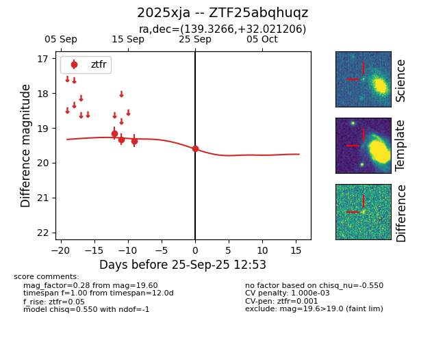
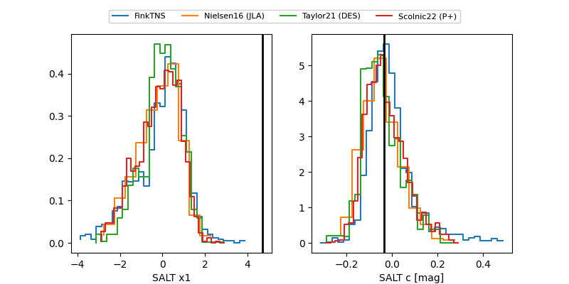

FINK: ZTF25abqhuqz
Lasair: ZTF25abqhuqz
ALeRCE: ZTF25abqhuqz
TNS: 2025xja
YSE: 2025xja
ZTF25abqhuqz (ztf,fink)
2025xja (tns,yse)
equatorial (ra, dec) = (139.3266,+32.02121)
galactic (l, b) = (193.3823,+43.65144)


last ztfr=19.60
4 ztfr detections